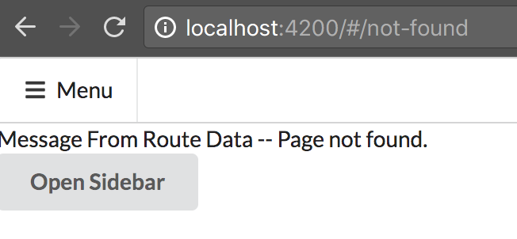

RouteParams QueryParams Fragment ConvertNum ChildRoute QueryHandling WildCard NoFound(err)Page RouteGuard-CanDeactivate-CanActive-CanLoad
Redirect ResolveDynamicData RouteGuard(service and child) LocalStrategy
Usually, if we give CanActivate guard to parent route, all child routes would be blocked. Thus, it is better us CanActivateChild,
block children, not parent.
Mention one thing --> Due to service donot have meta data (html, css, js), so if you want to inject it into Module or Component,
you should give @Injectable(). But, if you want to inject a service into another service, donot need Injectable.
To support old browser, we have to add old hash route (route-local-Strategy) in root route module.

you can see # in the url. In this way, webserver will only care the thing before /#, so it will let webserver read correct
route, because webserver will use localhost://4200/ as root and replace it with server/, then pluse route --> server/route.
Lazy load route should only apply to app.moudule.ts. It help to solve egal load problem when modules and compos has been
injected into app.module.ts --> So, it saves resources. Lazy load usually for avoid when load main page, also load children
page and remove module from main module.
core is route center, by make it as featureModule, it will also improve some lazy load. also all related services goes in,
if one server only for one specific module, move the server to that module.
-
2 example -- tabs --> router-relatied.router.module.ts (root route do lodaChild module) -- in parent html -- add routeLink,
if u want to display in same page add route outlet.
-
routelinks and route outlet html is in tly.component.html, it also has router outlet for children views.
-
three-tabs-route.module.ts will include all children component and layout -- tly.component
-
if you already make module forChild routes, then you do not have to make it Children again, by using loadChildren.
-
Too may errors when I do test in this pj, just download the tutorial unit-test folder to see.